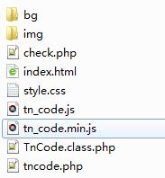

现在很多网站，比如淘宝，京东等都改用使用极验拖动验证码实现登录，这种方式比传统的验证码方式有更好的体验，减少用户输入的错误，也同样能起到防盗刷的功能。现在很多极验都是第三方的，也很多都是收费的。今天在这里给大家分享自己用原生php实现的一个极验的代码。用原生php的好处就是以后你要嵌套到什么框架，可以直接用核心代码，改一改就好了。
极验拖动动画图
代码文件截图

代码实现
html文件
<!DOCTYPE html>
<html lang="">
<head>
<meta charset="utf-8">
<meta http-equiv="x-ua-compatible" content="ie=edge">
<meta name="viewport" content="width=device-width, initial-scale=1">
<title>极验滑块拖动验证码-码农社区-web视频分享网</title>
<script type="text/javascript" src="tn_code.js?v=35"></script>
<link rel="stylesheet" type="text/css" href="style.css?v=27" />
<style type="text/css"></style>
</head>
<body style="text-align:center;">
<div class="tncode" style="text-align: center;margin: 100px auto;"></div>
<script type="text/javascript">
$TN.onsuccess(function(){
//验证通过
});
</script>
php文件：check.php
<?php
require_once dirname(__FILE__).'/TnCode.class.php';
$tn = new TnCode();
if($tn->check()){
$_SESSION['tncode_check'] = 'ok';
echo "ok";
}else{
$_SESSION['tncode_check'] = 'error';
echo "error";
}
?>主要核心文件：TnCode.class.php
<?php
class TnCode
{
var $im = null;
var $im_fullbg = null;
var $im_bg = null;
var $im_slide = null;
var $bg_width = 240;
var $bg_height = 150;
var $mark_width = 50;
var $mark_height = 50;
var $bg_num = 6;
var $_x = 0;
var $_y = 0;
//容错象素 越大体验越好，越小破解难道越高
var $_fault = 3;
function __construct(){
//ini_set('display_errors','On');
//
error_reporting(0);
if(!isset($_SESSION)){
session_start();
}
}
function make(){
$this->_init();
$this->_createSlide();
$this->_createBg();
$this->_merge();
$this->_imgout();
$this->_destroy();
}
function check($offset=''){
if(!$_SESSION['tncode_r']){
return false;
}
if(!$offset){
$offset = $_REQUEST['tn_r'];
}
$ret = abs($_SESSION['tncode_r']-$offset)<=$this->_fault;
if($ret){
unset($_SESSION['tncode_r']);
}else{
$_SESSION['tncode_err']++;
if($_SESSION['tncode_err']>10){//错误10次必须刷新
unset($_SESSION['tncode_r']);
}
}
return $ret;
}
private function _init(){
$bg = mt_rand(1,$this->bg_num);
$file_bg = dirname(__FILE__).'/bg/'.$bg.'.png';
$this->im_fullbg = imagecreatefrompng($file_bg);
$this->im_bg = imagecreatetruecolor($this->bg_width, $this->bg_height);
imagecopy($this->im_bg,$this->im_fullbg,0,0,0,0,$this->bg_width, $this->bg_height);
$this->im_slide = imagecreatetruecolor($this->mark_width, $this->bg_height);
$_SESSION['tncode_r'] = $this->_x = mt_rand(50,$this->bg_width-$this->mark_width-1);
$_SESSION['tncode_err'] = 0;
$this->_y = mt_rand(0,$this->bg_height-$this->mark_height-1);
}
private function _destroy(){
imagedestroy($this->im);
imagedestroy($this->im_fullbg);
imagedestroy($this->im_bg);
imagedestroy($this->im_slide);
}
private function _imgout(){
if(!$_GET['nowebp']&&function_exists('imagewebp')){//优先webp格式，超高压缩率
$type = 'webp';
$quality = 40;//图片质量 0-100
}else{
$type = 'png';
$quality = 7;//图片质量 0-9
}
header('Content-Type: image/'.$type);
$func = "image".$type;
$func($this->im,null,$quality);
}
private function _merge(){
$this->im = imagecreatetruecolor($this->bg_width, $this->bg_height*3);
imagecopy($this->im, $this->im_bg,0, 0 , 0, 0, $this->bg_width, $this->bg_height);
imagecopy($this->im, $this->im_slide,0, $this->bg_height , 0, 0, $this->mark_width, $this->bg_height);
imagecopy($this->im, $this->im_fullbg,0, $this->bg_height*2 , 0, 0, $this->bg_width, $this->bg_height);
imagecolortransparent($this->im,0);//16777215
}
private function _createBg(){
$file_mark = dirname(__FILE__).'/img/mark.png';
$im = imagecreatefrompng($file_mark);
header('Content-Type: image/png');
//imagealphablending( $im, true);
imagecolortransparent($im,0);//16777215
//imagepng($im);exit;
imagecopy($this->im_bg, $im, $this->_x, $this->_y , 0 , 0 , $this->mark_width, $this->mark_height);
imagedestroy($im);
}
private function _createSlide(){
$file_mark = dirname(__FILE__).'/img/mark2.png';
$img_mark = imagecreatefrompng($file_mark);
imagecopy($this->im_slide, $this->im_fullbg,0, $this->_y , $this->_x, $this->_y, $this->mark_width, $this->mark_height);
imagecopy($this->im_slide, $img_mark,0, $this->_y , 0, 0, $this->mark_width, $this->mark_height);
imagecolortransparent($this->im_slide,0);//16777215
//header('Content-Type: image/png');
//imagepng($this->im_slide);exit;
imagedestroy($img_mark);
}
}
?>代码下载地址
http://aso.39gs.com/tncode/tncode.rar